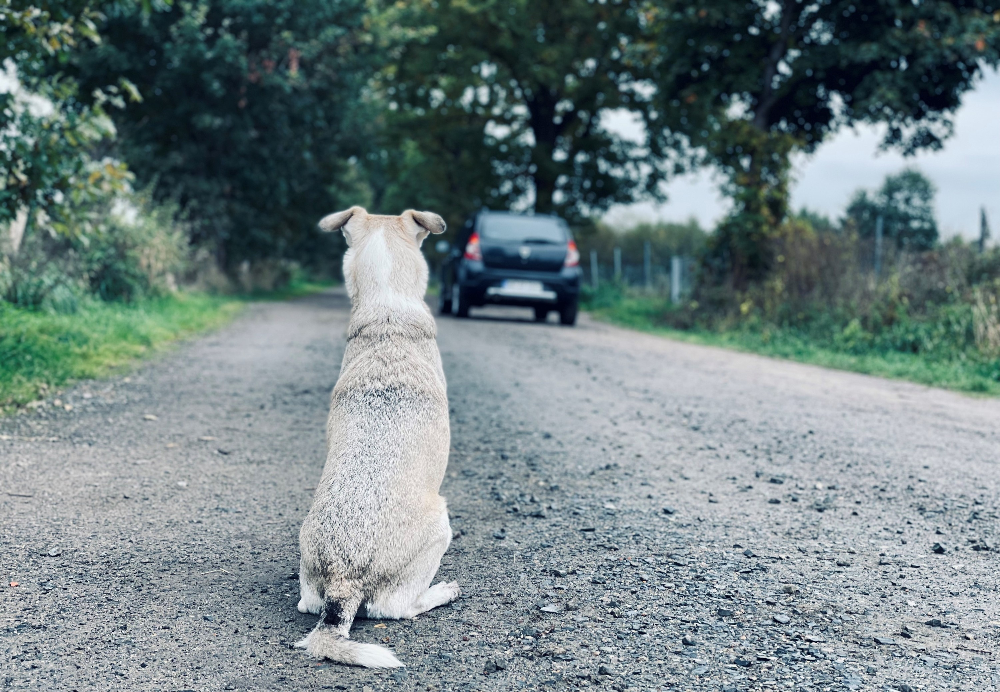

Contact Me!

Shelters are constantly struggling to have space available and have enough supplies to care for each pet. Most of these shelters are founded by volunteers or the owners themselves as they do not get much help. With limited space shelters can only do so much. And with the lack of funding they struggle even more. With these issues preventing the shelters from helping the animals around they keep getting dumped on the streets causing majoy over population. The reason why its bad is because most of the time these pets are not neutered and go off to have offspring. A lot of these pets on the streets tend to carry diaseases or extreme agression due to loss in trust in humans.